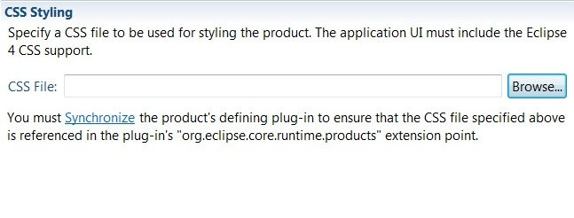

org.eclipse.core.resources/debug=true
org.eclipse.core.resources/notifications=true
in your .options file
or use the General > Tracing preference page to
enable it.
Example:
1. Modified files needed to enable the i18n support in the CSS bridge for the Polish locale:

2. Launch the Eclipse instance with the '-nl pl' command line arguments. Running CSS bridge with Polish locale:

StructuredViewer class now has an API to access the IStructuredSelection directly.
Examples:
IStructuredSelection sel = viewer.getStructuredSelection(); ITreeSelection treeSel = treeViewer.getStructuredSelection();Bye bye
(IStructuredSelection) viewer.getSelection(), we won't miss you!
